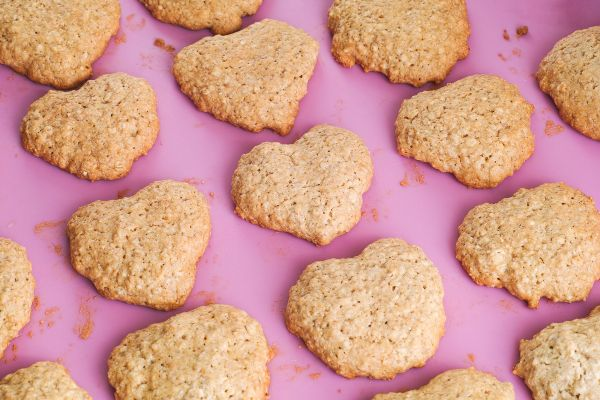

Banana Oat Cookies

These fun cookies are filled with fiber, protein and potassium and taste yummy without added sugars and fat.
Ingredients:
Serves 25
- 3 medium bananas (use overripe banana)
- 1 cup quick oats (not instant)
- 1/2 cup low-fat, plain yogurt
- 1/4 cup water
- 1/2 cup raisins (optional)
- 1/2 cup sunflower seeds (optional)
- spices (optional)
- cooking spray
Directions:
- Wash hands with soap and water.
- Pre-heat oven to 350-375°F
- Grease a baking sheet using cooking spray.
- Mash bananas.
- Mix bananas with yogurt and water in a medium sized bowl.
- Add quick oats. Mix well.
- Add optional add-ins if you wish. Keep them minimal.
- Add spices, to taste (optional)
- The batter should be thick and easily spoonable.
- Place a tablespoon of dough on the sheet, thin out to a flat disk. Repeat with remaining dough.
Refrigerate if any is remaining in bowl.
- Bake for 20 minutes. Flip and bake on other side 15 minutes to make crisper crust.
Back